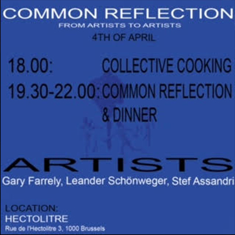

COMMON REFLECTION
by BARN
Common Reflection is a cozy space that aims to weave connections among artists and organisations within the Brussels Artist Run Network (BARN), and to nurture a supportive ecosystem for artists to connect and get feedback on their work. We aim to dedicate 45 minutes to each artist, each individually presenting a wide variety of artistic work.
-
Thursday, 4th of April, 2024
from 18:00h to 22:00h
@ Rue de l'Hectolitre 3, Reactor
-
We begin every evening with collective cooking because we believe this is an important step towards building relations. Then we have a dinner, during which three artists present an artwork, specifically made for this occasion, or not. Every gathering will take place in another artist-run space, which will also get some time to present themselves.
During our shared dinner three artists will show artworks, which we reflect on, together with the audience, while the artists remain the fly on the wall. Every gathering will take place in different artist-run spaces to enhance the visibility and the activity taking place in and around these initiatives.
PROGRAM
17:30 > door opens
18:00 > collective cooking
19:00 > artist presentations and common reflection
21:30 > end of thr programme
22:00 > door closes
Presenting:
Gary Farrelly is an Irish visual and performance artist based in Brussels. Recurring themes in his work are the built environment, institutional machines, hidden power and enchantment. In recent years, the main manifestation of his practice is a bilateral duo called Office for Joint Administrative Intelligence. Farrelly studied at NCAD in Dublin and later LUCA School of Arts and a.pass in Brussels. His work has been presented at Goldsmiths Center for Contemporary Art (London), Marres Centre for Contemporary culture (Maastricht), Contemporary Art Center (Cincinnati), Damien & The Love Guru (Brussels) and Salzburger Kunstverein. He is a lecturer at La Cambre ENSAV in Brussels.
-
https://www.garyfarrelly.com/
-
Leander Schönweger *1986 Italy, lives and works in Brussels, studied at the University of Applied Arts Vienna and was a 2018 Laureate of the Higher Institute for Fine Arts (HISK) in Ghent. His work was included in several group shows, including Chambre double, Les Tanneries, Amilly (2021), Open Skies, Wiels, Brussels (2019) and the 15th Istanbul Biennial (2017).
-
https://www.leander-schoenweger.eu/
-
stef assandri (they/them)
Artist, researcher and designer. Born in Montevideo in 1989.
In recent years, they have been exploring and researching practices that relate migration, gender, anti-speciesism, through writing, performance and costumes.
They also work collectively on projects –in Uruguay, Spain and Belgium– that address issues of gender and ecologies. With Renata Lamenza, they conducted and co-created the research project TACTICS for a COLLECTIVE BODY (2020-2022) at School of Arts, University of Antwerp. Stef collaborated with artists of the Fundación de Arte Contemporáneo in Uruguay, and co-directed and performed on Bailamos Siempre Las Mismas Canciones in Montevideo (2017-2018), Uruguay.
-
https://linktr.ee/assandri.tif/
-
See you soon!!